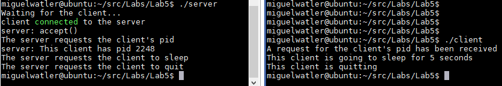

DSP912 – Lab 6: Server/Client Communications
Due: Friday, March 19, 2021
In this lab you will create two processes: server and client. They will communicate with each other through a socket connection.
The relationship of the server to the client is that of a master to a slave. The server will send commands to the client
and the client will obey and respond. This type of communications is called synchronous, in that the server does not send any more data
until it has received a response from the client.
- The server and client will communicate via a socket file /tmp/lab5.
- The socket type is AF_UNIX, SOCK_STREAM. The socket family is AF_UNIX.
- The client will run inside an infinite while loop whereas the server will send specific commands then quit.
- The sequence of commands are as follows:
- The server will send the command “Pid” to the client to request the client’s pid.
- The client will respond with “This client has pid <pid>”, where <pid> can be obtained from getpid().
- The server will print out the response from the client.
- The server will then send the command “Sleep” to the client to request the client to sleep for 5 seconds.
- The client will sleep for 5 seconds then respond to the server with “Done”.
- When the server receives “Done” from the client, the server will send the command “Quit” to tell the client to shutdown.
- The client will break out of its infinite while loop, close the socket connection, then return 0.
- The server will close all socket connections, unlink the socket file /tmp/lab5, then return 0.
- Be sure to add error handling in your code.
- Please add debug printf’s/cout’s throughout your code to keep track of what your server and client are doing.
- A sample run for the server and client are as follows (be sure to run the server first):

Lab Submission:
Email me your Makefile, and your server.cpp and client.cpp to:
miguel.watler@senecacollege.ca
NB: My last name is Watler, not Walter.